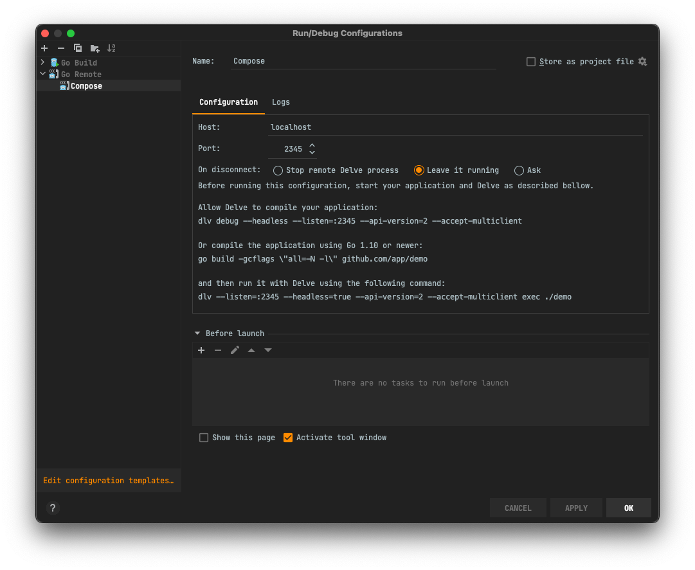

Local Development
This guide walks you through setting up a local development environment for monetr on macOS or Linux. If you are using Windows, it is still possible to run the development environment locally. However, it is not documented at this time.
Clone the repository
To get started, clone the monetr repository from GitHub or from your fork.
The rest of the commands in this guide are issued from this directory.
Dependencies
monetr's local development tries to not require anything to be installed on the developer's actual computer. Some tools must be installed though in order to prevent other tools being required. For the most part this is covered by Docker or another container engine. In the future we plan to fully support Podman as a local container engine as well as Docker, but at the moment Docker is recommended.
Mac Specific
macOS can ship with a version of make that is outdated. It is recommended that you use brew or any other preferred
method to install the most recent version of GNUMake on your Mac. This will not break anything that is already using
make, but will make sure that your version is compatible with the monetr Makefiles.
For example; you should see something like this for your make version.
make -v
# GNU Make 4.3
# Built for x86_64-apple-darwin20.1.0
# Copyright (C) 1988-2020 Free Software Foundation, Inc.
# License GPLv3+: GNU GPL version 3 or later <http://gnu.org/licenses/gpl.html>
# This is free software: you are free to change and redistribute it.
# There is NO WARRANTY, to the extent permitted by law.
Required
The following tools are required in order to work on monetr locally.
- Docker
- Node (with
yarninstalled) - GNUMake
These tools can be installed by running the following command.
But they can also be installed manually through your own preferred methods. As long as docker, make and yarn are
all available in your PATH variable, the rest of this guide should work just fine.
Starting It Up
With the above requirements installed. You should be able to spin up the local development environment that runs inside of Docker compose.
This will install node modules in the project's directory, as well as start up the containers needed for monetr to run
locally. This command will exit automatically once all the containers are healthy. If you want to follow along while it
is starting up you can use the make logs command in another terminal inside the project directory.
Working
Congratulations, you should now have monetr running locally on your computer. The develop task will print out some
basic information for you. But if you missed it, you can access the development version of monetr at http://localhost.
If you are working on documentation then that can be accessed at http://localhost/documentation.
Almost all of monetr's code is setup to hot-reload as you make changes. The documentation, Go code and React UI will all automatically reload as changes are made. Changes to the Go code will not invoke a browser refresh of any sort though, so to observe a new behavior in the API you will need to refresh or make the API call again.
Debugging
The monetr container running the API has delve included. If you prefer to work using a step-debugger you can connect your editor to it. You will need to reconnect your editor each time it reloads, but it is very easy to make your changes and then hit debug and let your breakpoints be hit.
Delve is available via port 2345 on localhost. I'm not sure what the configuration will be for every editor to
connect to it; but this is a screenshot of IntellJ IDEA's configuration for remote debugging.

Running Tests
monetr requires a PostgreSQL instance to be available for Go tests to be run. At the moment there isn't a shorthand script to provision this instance. But an easy way to do so is this:
This will start a PostgreSQL instance in Docker (or remove an existing one) and make it available on locahost:5432 as
well as not require authentication. This makes it easy for tests to target it.
If tests are run via make then nothing more needs to be done. However, if you want to run tests directly from your
editor or other tools you will need to run the database migrations.
Will run all schema migrations on the PostgreSQL database on your localhost container.
Tests can be run using the go test CLI, or all tests can be run using:
Cleaning Up
Once you have finished your work and you want to take the local development environment down you have a few options.
Stopping
Stopping allows you to keep the data you have in your development environment for later and come back to it. This can be helpful if you are working on a larger feature or bug. But overall it is recommended to completely wipe and re-provision your development environment each time you start working on something. This keeps the development environment tidy, but does have the downside of not introducing edge cases that might otherwise be harder to find. You can pause your development environment by running:
This will stop all of the Docker containers that were started, but will not remove any of their data. When you are ready you can start the containers again with the following command.
Completely Clean up
If you want to completely shut everything down { .annotate } then you can run the following command:
This removes the Plaid links that are active, takes down the Docker compose containers, removes their volumes, and removes all temporary directories and generated code in the project directory. It might miss a few things, but this should essentially return the project directory to a state akin to having freshly cloned it.
- This will delete all of your local development data, including any Plaid links, expenses, goals, etc...*